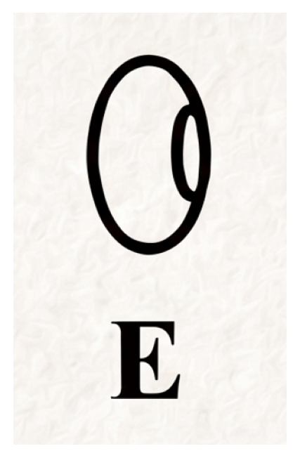

6 Base de datos
6.1 Generación y Caracterización del Conjunto de Datos
6.1.1 Inexistencia de datasets públicos y justificación
El reconocimiento óptico de caracteres para sistemas de escritura indígenas, particularmente para el alfabeto náhuatl (Figura 6.1), presenta una limitación inicial crítica: la inexistencia de un conjunto de datos público, estandarizado y etiquetado que permita entrenar modelos estadísticos y de aprendizaje profundo. A diferencia de alfabetos latinos o asiáticos, que cuentan con repositorios ampliamente documentados —como MNIST o EMNIST (Cohen et al. 2017)—, el dominio de los glifos náhuatl carece de recursos computacionales de código abierto.

Ante esta carencia, fue necesario construir un conjunto de datos propio. La decisión de generar un dataset sintético controlado se fundamenta en dos razones principales:
- Volumen de datos: proporcionar un número suficiente de ejemplos por clase para evitar el sobreajuste en arquitecturas de alta capacidad como las redes neuronales convolucionales.
- Variabilidad controlada: introducir deformaciones geométricas y perturbaciones estocásticas que permitan evaluar la capacidad de generalización ante las irregularidades presentes en documentos históricos reales (desalineación, degradación de tinta y variabilidad del trazo).
6.1.2 Diseño de las plantillas base y morfología del glifo náhuatl
Inicialmente, se diseñaron de forma manual y vectorial 25 plantillas base por cada uno de los 18 caracteres. Este diseño se fundamentó en el análisis morfológico de los glifos, los cuales combinan trazos curvos, segmentos rectos, puntos diacríticos aislados y bucles cerrados. La representación base se normalizó a una cuadrícula monocromática de \(28 \times 28\) píxeles, preservando la proporción y densidad de tinta característica, estableciendo así un punto de partida topológicamente válido para la posterior aumentación de datos.
6.2 Transformaciones Geométricas y Estocásticas (Data Augmentation)
Para emular las condiciones de documentos históricos y variaciones caligráficas, se aplicaron transformaciones estocásticas a las plantillas base. A cada una de las 25 muestras iniciales se le generaron 90 variantes, conformando un conjunto diverso y balanceado.

6.2.1 Aplicación de grupos de Lie en transformaciones afines
Las transformaciones geométricas aplicadas (rotación, traslación y escalamiento) se formalizan como acciones del grupo afín \(\mathrm{Aff}(2)\) sobre el dominio bidimensional de la imagen. Una transformación afín se expresa como:
\[\begin{pmatrix} x' \\ y' \end{pmatrix} = \begin{pmatrix} s_x \cos\theta & -s_y \sin\theta \\ s_x \sin\theta & s_y \cos\theta \end{pmatrix} \begin{pmatrix} x \\ y \end{pmatrix} + \begin{pmatrix} t_x \\ t_y \end{pmatrix}, \tag{6.1}\]
donde \(\theta\) representa el ángulo de rotación, \((t_x, t_y)\) el vector de traslación y \((s_x, s_y)\) los factores de escalamiento. En la implementación práctica se emplearon parámetros aleatorios acotados —por ejemplo, \(\theta \sim \mathcal{U}(-0.05\pi, 0.05\pi)\)— para preservar la identidad topológica y semántica de cada glifo.
6.2.2 Modelado de ruido y degradación
Para simular la naturaleza física del papel histórico y la tinta, se inyectaron perturbaciones estocásticas adicionales:
- Ruido aditivo: modelado mediante ruido blanco gaussiano \(\varepsilon \sim \mathcal{N}(0, \sigma^2)\) para emular imperfecciones del sensor óptico de escaneo.
- Degradación de bordes: aplicación de un filtro de suavizado gaussiano leve para simular la difusión o “sangrado” de la tinta sobre soporte poroso.
6.2.3 Análisis estadístico del dataset resultante
El proceso generó un conjunto de datos final balanceado de \(18 \times 25 \times 90 = 40{,}500\) imágenes monocromáticas de \(28 \times 28\) píxeles, con exactamente \(2{,}250\) muestras por clase. Este balance perfecto elimina sesgos hacia clases mayoritarias, mientras que la varianza intra-clase inducida controlada obliga a ambos modelos (HMM y CNN) a capturar las invariantes morfológicas del carácter en lugar de memorizar las plantillas base.
6.3 Carga y Organización de los Datos (Pipeline CNN)
Para garantizar una comparación experimental equitativa, tanto la CNN como el HMM operan sobre la misma resolución base (\(28 \times 28\) píxeles en escala de grises) y bajo la misma proporción de partición entrenamiento-validación (\(80\% - 20\%\)).
En el flujo de la CNN, las imágenes se cargaron desde directorios jerárquicos mediante TensorFlow:
train_ds = tf.keras.utils.image_dataset_from_directory(
data_dir,
validation_split=0.2,
subset="training",
seed=123,
image_size=(28, 28),
batch_size=32,
color_mode="grayscale"
)
val_ds = tf.keras.utils.image_dataset_from_directory(
data_dir,
validation_split=0.2,
subset="validation",
seed=123,
image_size=(28, 28),
batch_size=32,
color_mode="grayscale"
)Dado que los glifos del alfabeto náhuatl se distinguen por su geometría estructural y no por información cromática, el uso de un único canal (\(C = 1\)) reduce la dimensionalidad de entrada sin pérdida de información discriminativa.
6.4 Normalización y Aumentación en Línea
Antes de ingresar a las capas convolucionales, las intensidades de píxel se normalizan al intervalo \([0, 1]\):
normalization_layer = tf.keras.layers.Rescaling(1./255)Adicionalmente, sobre el conjunto de entrenamiento se aplica aumentación estocástica en línea para reforzar la invarianza local y mitigar el sobreajuste:
data_augmentation = tf.keras.Sequential([
tf.keras.layers.RandomRotation(0.05),
tf.keras.layers.RandomZoom(0.1),
tf.keras.layers.RandomTranslation(0.05, 0.05)
])Finalmente, el flujo de datos se optimiza en memoria mediante almacenamiento en caché y precarga asíncrona:
train_ds = train_ds.cache().shuffle(5000).prefetch(AUTOTUNE)
val_ds = val_ds.cache().prefetch(AUTOTUNE)6.5 Mapeo Dimensional: De \(\mathbb{R}^{28 \times 28}\) a \(O^T\) (Pipeline HMM)
Para abordar el reconocimiento mediante un Modelo Oculto de Markov Categórico con topología de Bakis, cada imagen bidimensional \(X \in \mathbb{R}^{H \times W}\) (\(H = W = 28\)) debe proyectarse en una secuencia unidimensional ordenada de observaciones discretas \(Y = (y_1, y_2, \dots, y_T) \in O^T\) (Plötz y Fink 2009). Dado que esta proyección conlleva una reducción dimensional que sacrifica vecindades bidimensionales simultáneas, la transición se realiza mediante extracción de rasgos estructurales sobre ventanas deslizantes verticales.
Definición 6.1 (Operador de ventana deslizante vertical) Sea \(X \in [0, 1]^{H \times W}\) una imagen normalizada con trazo activo (donde los píxeles de tinta tienen valores positivos tras invertir el fondo). El operador de ventana deslizante vertical recorre la imagen de izquierda a derecha extrayendo \(T\) submatrices (rebanadas verticales) de altura \(H\) y ancho \(w\) con paso (stride) \(s\):
\[ T = \left\lfloor \frac{W - w}{s} \right\rfloor + 1. \tag{6.2}\]
Cada ventana \(S_t \in [0, 1]^{H \times w}\), para \(t \in \{1, \dots, T\}\), captura la distribución vertical del trazo en la \(t\)-ésima posición horizontal. Por ejemplo, para \(W = 28\), \(w = 4\) y \(s = 2\), se obtiene una secuencia de longitud \(T = 13\) pasos espaciales.
6.6 Extracción Matemática de Rasgos Estructurales (Feature Engineering)
Con el fin de preservar la geometría vertical del glifo dentro de cada ventana \(S_t\), se extraen tres descriptores morfológicos complementarios:
6.6.1 Cálculo del Centro de Gravedad Vertical
El primer momento de la distribución de masa de tinta proporciona el centroide vertical \(\mu_y(t)\) dentro de la ventana \(S_t\). Denotando por \(M_t = \sum_{i=0}^{H-1} \sum_{j=0}^{w-1} S_t(i,j)\) la masa total de tinta en la ventana, el centroide vertical normalizado se define como:
\[ \mu_y(t) = \begin{cases} \dfrac{1}{H - 1} \dfrac{\sum_{i=0}^{H-1} \sum_{j=0}^{w-1} i \cdot S_t(i,j)}{M_t}, & \text{si } M_t > \epsilon, \\[10pt] 0.5, & \text{si } M_t \le \epsilon, \end{cases} \tag{6.3}\]
donde \(\epsilon > 0\) es un umbral numérico para ventanas vacías (fondo sin trazo). Este descriptor captura la altura relativa del trazo a lo largo del eje horizontal.
6.6.2 Transiciones de estado y cruces por cero
Se proyecta horizontalmente la ventana \(S_t\) sumando sus intensidades por fila para obtener el perfil vertical \(h_t(i) = \sum_{j=0}^{w-1} S_t(i,j)\), y se binariza mediante un umbral \(\tau\). El número de transiciones fondo-tinta \(z(t)\) se calcula contando los cambios de estado entre filas adyacentes:
\[ z(t) = \sum_{i=0}^{H-2} \left| \mathbb{I}(h_t(i+1) > \tau) - \mathbb{I}(h_t(i) > \tau) \right|. \tag{6.4}\]
Este rasgo permite distinguir trazos simples de estructuras con bucles cerrados o trazos horizontales superpuestos (como en los glifos A, Ch, S o Ts).
6.6.3 Perfiles superior e inferior (envoltura convexa)
Para cada ventana \(S_t\) con tinta activa (\(M_t > \epsilon\)), se definen el perfil superior \(P_{\text{sup}}(t)\) y el perfil inferior \(P_{\text{inf}}(t)\) como los índices de fila mínimo y máximo donde la intensidad supera el umbral \(\tau\):
\[ P_{\text{sup}}(t) = \min \{ i : h_t(i) > \tau \}, \qquad P_{\text{inf}}(t) = \max \{ i : h_t(i) > \tau \}. \]
Dado que el índice de fila crece de arriba hacia abajo (\(0 \le P_{\text{sup}}(t) \le P_{\text{inf}}(t) \le H - 1\)), el espesor local de la envoltura del carácter en el paso \(t\) queda definido de forma no negativa como:
\[ \Delta P(t) = \frac{P_{\text{inf}}(t) - P_{\text{sup}}(t) + 1}{H} \in (0, 1]. \tag{6.5}\]
6.7 Cuantificación y Discretización del Espacio de Observaciones
Para alimentar el Modelo Oculto de Markov Categórico desarrollado en el capítulo teórico, el vector continuo de rasgos extraído en cada paso \(t\) debe mapearse a un alfabeto finito de símbolos observables \(O\).
6.7.1 Función de cuantificación uniforme (Binning)
Dado un rasgo continuo acotado \(v \in [v_{\min}, v_{\max}]\), se aplica una función de cuantificación uniforme que lo asigna a uno de \(N_b\) intervalos discretos \(\{0, 1, \dots, N_b - 1\}\):
\[ q(v) = \min\left( \left\lfloor \frac{v - v_{\min}}{v_{\max} - v_{\min}} \times N_b \right\rfloor,\; N_b - 1 \right). \tag{6.6}\]
6.7.2 Codificación binaria y construcción del alfabeto de 256 símbolos observables
Para cada ventana \(S_t\), los rasgos estructurales se cuantifican asignando una resolución de bits específica a cada descriptor:
- Centroide vertical \(\mu_y(t)\): cuantificado en \(N_b = 8\) niveles (\(3\) bits).
- Espesor de la envoltura \(\Delta P(t)\): cuantificado en \(N_b = 8\) niveles (\(3\) bits).
- Número de transiciones \(z(t)\): acotado en \(N_b = 4\) niveles (\(2\) bits).
Concatenando estas tres representaciones binarias (\(3 + 3 + 2 = 8\) bits), se obtiene un entero único \(y_t \in \{0, 1, \dots, 255\}\) mediante:
\[ y_t = 32 \cdot q(\mu_y(t)) + 4 \cdot q(\Delta P(t)) + q(z(t)). \tag{6.7}\]
De este modo, se construye un alfabeto discreto de exactamente \(M = 2^8 = 256\) símbolos observables, donde cada símbolo codifica una configuración morfológica local de la ventana deslizante.
6.7.3 Análisis de la entropía de Shannon de las secuencias generadas
Para verificar que la discretización no colapsa la variabilidad morfológica de los glifos en unos pocos símbolos triviales, se evalúa la entropía de Shannon \(H(Y)\) sobre la distribución empírica de los 256 símbolos en el conjunto de entrenamiento (Shannon 1948):
\[ H(Y) = - \sum_{m=0}^{255} p(v_m) \log_2 p(v_m) \in [0, 8] \text{ bits}. \tag{6.8}\]
Un valor elevado de \(H(Y)\) confirma que el esquema de cuantificación preserva una alta diversidad informativa a lo largo de las secuencias, condición indispensable para que las matrices de emisión \(E\) del HMM discriminen eficazmente entre las 18 clases del alfabeto náhuatl.